Preprint · November 2026
Decisions Without GenerationWhat Universal Decision Models Changed About Classification, and Where a Fine-Tuned 4B Model Still Wins
Preprint published on Zenodo on 27 November 2026: doi:10.5281/zenodo.24601222.
Abstract
The release of TypeSafe’s Jev, a hosted “System One” model that answers typed questions about a piece of text with calibrated probabilities in a single non-autoregressive pass, did something that a decade of text classifiers had not: it put a classifier into the hands of people who never trained one, and it was pointed at decisions where nobody had thought to use a classifier before. Browser agents ask it which element to click. Orchestrators ask it which tool to call and whether the call is risky. Harnesses ask it whether a trajectory succeeded or is looping. Moderation pipelines ask it whether a response is harmful. We treat these as new problem statements and ask a practical question: on the decision surfaces Jev made visible, how do the classical tools of the field, sentence-embedding classifiers, zero-shot log-probability readouts, and classifier heads on a small fine-tuned language model, perform in accuracy, calibration, latency and cost?
We build four designs on Qwen3.5-4B that share Jev’s interface (state plus one to five typed questions, one forward pass, one probability vector per question): a zero-shot logprob readout, LoRA with linear heads, LoRA with a per-option [CLS] scorer for dynamic option sets, and a LoRA language model read at answer slots. We evaluate them, an embedding floor, and Jev on sixteen datasets spanning intent routing, moderation, tool selection, browser-step selection, agent-trajectory judging, fact verification, adversarial inference and knowledge, with temperature fitted on a disjoint calibration split and every model measured on the same rows.
The picture is consistent. With a few thousand labels and ten to eighty minutes on a rented GPU, a fine-tuned 4B model matches or beats the universal model on every agentic decision we measured, at 55–85 ms per decision against roughly 250 ms for the API, and at $1–9 per million decisions on a fully used GPU against $10–144 billed per token. The head design barely matters; training does. Jev, in turn, is the strongest zero-label decision model we measured, beats our zero-shot 4B on every reading task, escalates when evidence is missing where our best fine-tuned model has learned to guess, and is the most conservative scorer at high confidence. On knowledge we ran two probes: on the public MMLU-Pro benchmark Jev leads a one-pass 4B by nineteen points, but on ObscureWikiQA, a set built from articles too obscure for any benchmark, its closed-book accuracy is within the confidence interval of the 4B’s, so the MMLU-Pro lead reflects that benchmark rather than a general advantage. Decomposing a decision into typed sub-questions, the lever its users report most often, did not help on the one task where we tested it. We also analyse serving: a hosted API scales out by adding concurrent calls, while a self-hosted classifier is bound by the capacity of its GPU, and we measure what continuous batching does to that ceiling on one task (one A100 goes from 17 requests per second one at a time to 73 under load) and where the cost curves cross. We also build Jev’s serving contract on the 4B itself, encoding the state once with the untouched base weights and fanning isolated question segments out over the cached state: accuracy matches or slightly exceeds the shared-prompt arms and a marginal question costs two milliseconds, at the price of a second forward pass. We conclude that universal decision models democratised classification, that in most labelled, high-volume settings a purpose-tuned small classifier will still do the better job, and that both are needed. We close with a research direction: reinforcement learning for decision models whose reward comes from the environment the decision acts in, rather than from a loss that penalises false positives and negatives, which would reduce to supervised training with a different name.
Key results
| Result | As reported in the paper |
|---|---|
| Agentic decisions (fine-tuned 4B vs Jev) | With a few thousand labels and ten to eighty minutes on a rented GPU, a fine-tuned 4B model matches or beats the universal model on every agentic decision measured |
| Latency per decision | 55–85 ms (fine-tuned 4B) against roughly 250 ms for the API |
| Cost per million decisions | $1–9 on a fully used GPU against $10–144 billed per token |
| Mind2Web browser-step selection | One epoch (6,787 steps, about 20 minutes on an A100) gives 6 points over the universal model in distribution and 5 to 6 on unseen websites and domains |
| Knowledge | Jev leads a one-pass 4B by nineteen points on MMLU-Pro; on ObscureWikiQA its closed-book accuracy is within the confidence interval of the 4B's |
| Continuous batching, one A100 | 17 requests per second one at a time → 73 under load |
| Jev-style fan-out on the 4B | Accuracy matches or slightly exceeds the shared-prompt arms; a marginal question costs two milliseconds |
| Decomposition into typed sub-questions | Did not help on the one task where it was tested |
Sixteen datasets spanning intent routing, moderation, tool selection, browser-step selection, agent-trajectory judging, fact verification, adversarial inference and knowledge; numbers from the abstract and Table 4.
1. Introduction
Text classification is the oldest deployed form of natural-language processing and, until recently, the least glamorous. Intent routers, spam filters, sentiment scorers and moderation models were trained per task, on labelled data, by teams who owned the label pipeline. Large language models changed who could build a classifier (anyone who can write a prompt) but not how classifiers were served: an LLM asked to pick a category generates tokens, and the answer has to be parsed out of the generation, with latency and cost scaled to the generation rather than to the decision.
In 2026 TypeSafe released Jev, which it calls a System One model in Kahneman’s sense [48]: a model that does not generate text but returns, for a supplied state and a set of typed questions, a probability over each question’s options in one pass, with a confidence score. TypeSafe describes it as trained with “Reinforcement Learning for Calibrated Decisions” so that “its probabilities are optimized against outcomes to reflect uncertainty” [37, 38]. Three properties of this product matter for this paper more than its architecture, which is undisclosed. First, it needs no labels: the question text and the option strings are the whole specification. Second, its output is a typed object, so software can act on it directly. Third, and most consequentially, its users have applied it to decisions where the field never used a classifier: which page element a browser agent should act on, which function an orchestrator should call and whether the call is destructive, whether an agent’s run succeeded or is looping, whether a model output should be blocked, and which model a request should be routed to [37, 46].
We take those uses as the object of study. They are new problem statements for classification, and they arrived without the labelled datasets, the fine-tuning recipes or the latency budgets that a classical practitioner would expect. Our question is therefore not “is Jev good” but “now that these decision surfaces exist, what do the classical approaches do on them, and what does a universal model add?” Concretely:
- On each surface, how accurate, how well calibrated and how fast is a sentence-embedding classifier, a zero-shot logprob readout from a small open model, and a classifier head on a small fine-tuned model, compared with the universal model?
- How many labels does it take for the fine-tuned model to overtake the universal one, and what is the cheapest design that gets there?
- Where does the universal model remain better, and is that because of knowledge, reading, escalation behaviour or calibration?
- What does each approach cost to train and to serve, how much load can one GPU carry, and at what point does self-hosting pay?
Our contributions are the following. We define a single decision interface shared by all systems under test and implement four designs on Qwen3.5-4B [22, 45] that return every answer in one forward pass (Section 4, Figures 1–2). We assemble sixteen evaluation sets that cover both classical classification and the agentic surfaces above, including a browser-step task with three out-of-distribution splits, a tool-selection task trained on synthetic data and tested on a human benchmark, a fact-verification task with evidence-removal and evidence-swap controls, and a purpose-built uncontaminated knowledge probe (Section 5). We report accuracy, macro-F1, negative log-likelihood, Brier score, expected calibration error before and after held-out temperature scaling, selective accuracy, out-of-scope recall, batch-1 latency on real rows, throughput and cost per million decisions, for every system on the same rows (Section 6). We run a label-efficiency curve from 50 to 10,000 labels and compare knowledge on a public benchmark and on the obscure probe (Sections 6.3, 6.6). We give a serving analysis covering training cost, serving cost, capacity and concurrency for each arm on each task (Section 7). Finally we argue for a specific next step, reinforcement learning of decision models from environmental feedback, and explain why the obvious formulation, rewarding fewer false positives and negatives, is not a step at all (Section 10).
2. Background and related work
2.1 Classification before and after language models
The pre-LLM state of the art for text classification was an encoder fine-tuned per task [42]. Sentence-embedding models [7] made a cheaper variant possible: freeze the encoder, embed the text, and train a linear classifier on top; SetFit [6] showed that contrastive fine-tuning of the embedding closes most of the gap to full fine-tuning with a few dozen labels. Our Arm 0 is exactly this frozen-embedding-plus-logistic-regression recipe, chosen as the floor a practitioner would try first.
Zero-shot classification without task labels was first made practical by casting the label as a hypothesis and using a natural-language-inference model to score entailment [5]; later universal classifiers such as GLiClass [36] train a single encoder to score arbitrary label sets, and a 2026 benchmark [41] compares cross-encoders, embedding models, rerankers and LLMs on zero-shot classification and finds no single family dominant. Jev belongs to this lineage in interface (arbitrary label sets, no training) but not in mechanism (it is a decision model trained with reinforcement learning rather than an entailment scorer), and it extends the interface to multiple typed questions over one state.
2.2 Prompt-based classification and its fragility
Prompting a generative model and reading the probability of each label token is the cheapest way to turn an LLM into a classifier, and several of its pathologies are well documented. Few-shot performance is unstable under prompt format and example order, and the prior over label tokens should be estimated and divided out [4]. Different surface forms of the same answer compete for probability mass [25]. Multiple-choice prompts carry a token bias toward specific option identifiers and a weaker position bias [24]. Pattern-exploiting training [40] and related work turned prompting into a fine-tuning objective. We observe the same fragility: a single instruction line in the system prompt drops our zero-shot accuracy from 63 % to 21 % on banking77’s calibration split because 77 options need two-letter codes (Section 6.1). Every fine-tuned design in this paper is immune to it.
2.3 Parameter-efficient fine-tuning and classifier heads
Adapters [39] and low-rank adaptation [1] make it cheap to specialise a multi-billion-parameter model to a task, and LoRA weights can be merged into the base weights so that inference costs exactly what the base model costs. Three of our arms use LoRA, and one of our operational findings is that an unmerged adapter adds about 60 ms per decision on a 4B model, enough to invert a latency ranking. The choice between reading the answer from the language-model head, from a linear head on a hidden state, or from a scorer over per-option marker tokens is a design question with little published guidance for decision workloads; it is the axis our Arms 2a, 2b and 3 vary.
2.4 Calibration and selective prediction
Modern neural classifiers are over-confident, and a single temperature fitted on held-out data fixes most of it [2]. Expected calibration error [43] and the Brier score [44] measure it; selective classification [3] turns a calibrated confidence into a coverage-accuracy trade-off, which is what a decision model’s consumer actually uses when it routes low-confidence cases to a fallback. Language models can also report their own uncertainty with some validity [34], but a generative model’s stated confidence is a different object from a probability read at a token. TypeSafe frames calibration as Jev’s central property and states that it “is measured across groups of predictions; it does not guarantee that an individual answer is correct” [38]. We report calibration before and after temperature scaling for every model, including Jev, and analyse escalation behaviour directly (Section 6.4).
2.5 Decision surfaces in agent systems
The agentic tasks in this study each have a benchmark that was built to evaluate a generating LLM, which we re-pose as a one-pass decision. Mind2Web [19] provides real web tasks with the ground-truth element and operation for each step; its authors’ ranker produces candidate elements, and the choice among the top candidates is a classification. MetaTool [16] asks whether a tool is needed and which one; the Berkeley Function Calling Leaderboard [17] and the xLAM synthetic corpus [18] cover function selection with irrelevance detection. AgentRewardBench [20] provides expert judgements of whether a web agent’s trajectory succeeded, looped or caused side effects, and reports that no single LLM judge excels everywhere; LLM-as-a-judge [23] is the generative baseline it evaluates. WildGuard [15] labels prompts and responses for harm and refusal. Belcak et al. [26] argue that agent systems repeatedly invoke a small number of narrow capabilities and that small language models are the natural fit; this paper is a test of that argument on the decision component specifically. Model routing [47] is another such component, which we do not test directly.
2.6 Reinforcement learning for decision models
RLHF [27] optimises a policy against a learned preference model; RLVR [28, 29, 30] optimises it against a programmatic verifier; DPO [31] removes the explicit policy-gradient step. All of these are formulated for generators. Jev’s stated recipe, “Reinforcement Learning for Calibrated Decisions”, optimises probabilities “against outcomes” [37, 38], which places it closer to contextual bandits [32], where the reward for a choice is observed from the environment after the choice is made. Recent work on process rewards for agents [50] and on learning reward models from mixed feedback types [49] is relevant to the direction we propose in Section 10, and reward hacking [33] is the failure mode that direction has to design around.
3. The problem statements that a universal decision model surfaced
We group the decisions people have pointed Jev at into five surfaces, each of which becomes an experiment.
Browser use. Given a task, a page and a list of candidate elements, which element should the agent act on, and with what operation? The candidate list changes on every step, the correct answer may be outside the list, and the decision is made on every step of every task, so latency compounds.
Tool and function selection. Given a request and a list of available functions, which function should be called, how many calls are needed, and is any of the functions relevant at all? The list is per request; irrelevance is a first-class answer.
Fixed-catalogue routing. Given a request and a catalogue that does not change per request (an intent inventory, a tool registry, a set of downstream models), which entry applies, or none? This is classical intent classification with an out-of-scope class, and it is where classifiers have always lived.
Judging an agent’s run. Given a trajectory, did it succeed, is it looping, did it cause side effects? The state is long, the labels are expert judgements, and the decision gates retries and escalation.
Reading and judgement over evidence. Given a claim and evidence, is the claim supported, refuted or undecidable? Given a prompt and a response, is either harmful, and did the model refuse? These require reading the state rather than recognising its surface, and they include an explicit “not enough information” or “none” option that the consumer uses to escalate.
Knowledge (answering from parametric memory) is a sixth surface that Jev’s users advertise through MMLU-Pro [14]; we include it with a public benchmark and with a contamination-safe probe of our own.
4. Methods
4.1 One interface for every system
Every system implements the same contract (Figure 1): state (text) plus one to five typed questions returns one probability vector per question, from one forward pass. Question types are enum (an option list), bool (the enum ["no", "yes"]) and ordinal (an ordered enum, for which we also report mean absolute error). A question may mark an option as out-of-scope (oos_index), which is the “none of these” or “not enough information” answer. Data are JSONL rows of one state and its questions. Jev is queried through OpenRouter’s decisions endpoint with the same state, the question text as instructions and the option strings as criteria, using its choice, noul and score primitives; its probabilities arrive rounded to 0.01 and are floored at 1e-4 before log-scoring.
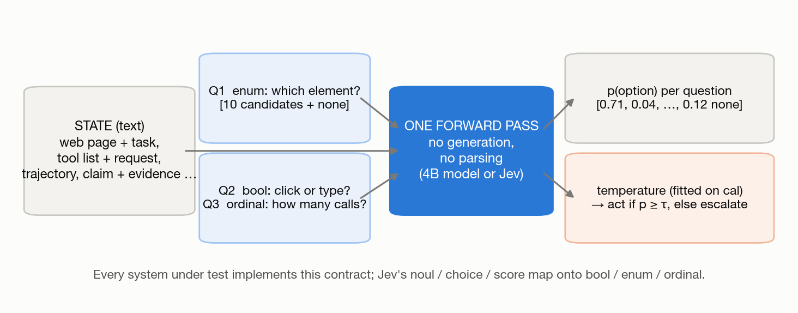
4.2 Systems under test
Figure 2 shows where each design reads its answer from; Table 1 summarises what is trained and what inference costs.
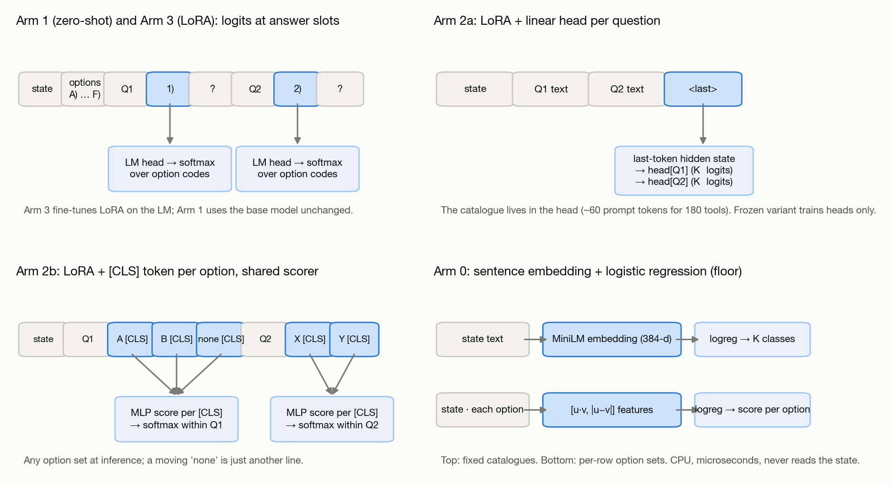
| Arm | Design | Trained parameters | Inference |
|---|---|---|---|
| 0 | MiniLM sentence embedding + logistic regression; for per-row option sets, a pairwise scorer on [u·v, |u−v|] |
logistic regression | CPU, microseconds |
| 1 | Zero-shot logprob readout from Qwen3.5-4B (chat template, thinking off, single-token option codes; p(option) = p(bare code) + p(space code)) | none | one prefill, LM head at answer positions only |
| 2a-frozen | Linear head per question on the cached last-token hidden state of the frozen 4B | heads only (seconds, CPU) | one prefill |
| 2a | LoRA on the 4B + linear head per question. On per-row option sets the head is an answer-index head over the listed options | LoRA + heads | one prefill, no LM head |
| 2b | LoRA + a new [CLS] token appended to every option line; a shared 2-layer MLP scores each [CLS] state; softmax within each question; options shuffled every step; 15 % of rows get a distractor option |
LoRA + scorer + [CLS] row |
one prefill, gather [CLS] states |
| 3 | LoRA on the language model; a multi-slot template (1) ?, 2) ? … in the assistant turn, teacher-forced); logits read at the token before each placeholder |
LoRA | one prefill, LM head at slots |
| Jev | TypeSafe jev-1.13 via OpenRouter |
— | API |
Arms 2b and 3 accept any option set at inference and can represent a “none” option that moves position; Arm 2a cannot, and Arm 0’s pairwise variant can. Option codes for Arms 1 and 3 are letters A–Z followed by two-letter codes that the Qwen tokenizer maps to a single token both bare and with a leading space (505 such codes exist), verified at runtime.
4.3 Backbone and training recipe
Qwen3.5-4B is a hybrid of Gated DeltaNet linear-attention layers [22] and full-attention layers, loaded in bfloat16 as a text-only causal model with thinking disabled. LoRA rank 16, alpha 32, dropout 0.05 on the attention and MLP projections and on the DeltaNet projections; learning rate 1e-4 for LoRA and 1e-3 for heads, scorer and the [CLS] row; AdamW; cosine schedule with 3 % warm-up; effective batch 32; gradient clipping at 1.0; loss 0.7·cross-entropy + 0.3·Brier/K (for Arm 3, full-vocabulary cross-entropy at the slot plus Brier over displayed options). Two epochs on short-prompt sets, one epoch on long-prompt sets (a second epoch never improved calibration-split NLL on those); checkpoint selection on calibration-split NLL; gradient checkpointing above 1,024 tokens; training capped at 10,000 rows. Because the Brier term is divided by the option count, it is negligible on many-class sets and the trained arms are effectively cross-entropy-trained; we record this rather than change it mid-study. LoRA weights are merged into the base model before any latency measurement, with outputs verified identical to 1e-6.
4.4 Evaluation pipeline, calibration and metrics
Figure 3 shows the pipeline. A single temperature is fitted by NLL on the calibration split only (one per question type for Arm 2b) and applied unchanged to test; we report metrics before and after. Arm 1’s prompt variant is chosen on the calibration split. We report accuracy; macro-F1 on fixed option sets; NLL; the standard multiclass Brier score; ECE with 15 equal-width bins on top-label confidence; AUROC of confidence against correctness; selective accuracy at 80 % and 90 % coverage; out-of-scope recall using each row’s own oos_index; and ordinal MAE. Multi-question datasets are reported per question. Seeds are explicit, test splits are never used for selection, and every Jev raw response is cached so that rescoring never re-bills.
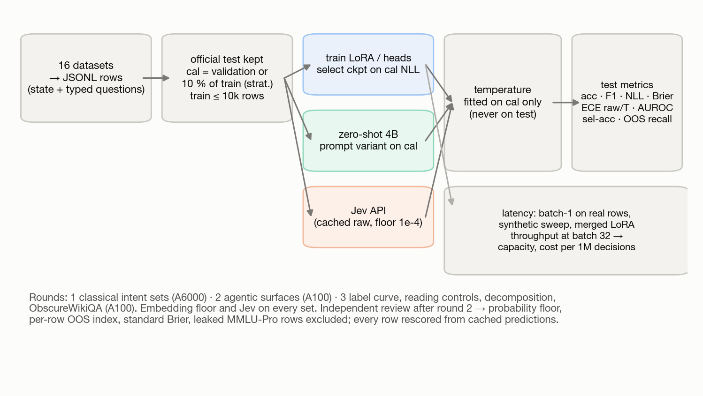
4.5 Latency, throughput and cost protocols
Two latency protocols are used. The synthetic protocol runs 200 warmed-up batch-1 requests at 256-, 1,024- and 4,096-token states with 4–10 options and 1–3 questions, a batch-32 throughput condition, and an option-count sweep from 5 to 100, on one GPU with the HF forward pass and the LM head applied only at answer positions; Jev is measured under the same conditions from the same client machine, with 32 concurrent requests for the throughput condition. The real-row protocol times batch-1 inference on 100 sampled test rows of each dataset, request in to probabilities out including tokenisation, for every trained arm and for the zero-shot arm, and takes Jev’s per-request wall time on the same rows from the cache. Cost per million decisions is GPU list price divided by measured decisions per hour for local arms (A6000 48 GB at $0.35/hr and A100 80 GB at $1.09/hr, the on-demand prices on the cloud we rented from) and the billed usage for Jev ($0.042 per million input tokens, output free). Local latencies are bfloat16 with the reference DeltaNet kernels and no serving-stack optimisation; Jev’s include network and provider queueing.
5. Datasets
Official test splits are kept; the calibration split is the official validation split or a stratified 10 % carved from train; training is capped at 10,000 rows. Table 2 lists the sets; the surfaces of Section 3 are marked.
| Dataset | Surface | Train / cal / test | Questions | Options |
|---|---|---|---|---|
| banking77 [8] | fixed catalogue | 8,695 / 1,308 / 3,080 | intent | 77 |
| CLINC150 plus [9] | fixed catalogue, OOS | 10,000 / 3,100 / 5,500 | intent | 150 + out-of-scope |
| MASSIVE en-US [11] | fixed catalogue | 10,000 / 2,033 / 2,974 | intent, scenario | 60, 18 |
| MetaTool [16] | fixed catalogue, OOS | 10,000 / 2,061 / 4,122 | tool | 179 + none (20 tools held out entirely) |
| BoolQ [10] | reading | 8,157 / 1,270 / 3,270 | answer | bool |
| ANLI R1–R3 [12] | reading | 10,000 / 3,200 / 3,200 | relation | 3 |
| SST-5 [13] | judgement | 8,544 / 1,101 / 2,210 | sentiment | ordinal 5 |
| WildGuardMix [15] | judgement | 10,000 / 3,962 / 1,688 | prompt harmful, response harmful, refused | 3 bools |
| Tool call: xLAM [18] train, BFCL v3 [17] cal/test | tool selection, OOS | 10,000 / 871 / 2,616 | function, number of calls | 2–38 + none; ordinal 0/1/2/3+ |
| Mind2Web [19] cross-task, cross-website, cross-domain | browser use, OOS | 6,787 / 987 / 2,094 (+1,373, +5,908) | element, operation | 10 ranker candidates + none; 3 |
| AgentRewardBench [20] | agent-run review | 918 / 129 / 254 | success, side effect, looping | 3 bools, ≈2.3k-token state |
| MMLU-Pro [14] | knowledge | 8,436 / 1,252 / 2,281 scored | answer | 3–10 per row |
| VitaminC [21] (+ no-evidence, swapped-evidence, decomposed) | reading, OOS | 10,000 / 1,001 / 2,001 | supports / refutes / not enough info | 3 |
| ObscureWikiQA (this paper; closed- and open-book) | knowledge | 33 / 31 / 253 | answer | 5 |
Choices that affect interpretation: the tool-call task trains on synthetic xLAM rows (30 % of which are given another row’s tools so that “none” is learnable) and is calibrated and tested on human-written BFCL, so it measures cross-source transfer. Mind2Web shows the paper ranker’s top ten candidates; when the target lies outside them the label is “none of the listed elements” (15 % of train, 27 % of the cross-task test). MetaTool holds twenty tools out of every split so that their queries are “none”. MMLU-Pro has no train split, so we split its public test set by subject and exclude 118 test questions that recur verbatim in our train portion; Jev’s score on it is contamination-suspect [35] and not leaderboard-comparable. AgentRewardBench trajectories are cut at 40 steps and 2,000 characters of final accessibility tree; its side-effect question is 6 % positive. VitaminC rows are sampled by case so that contrastive pairs stay together.
ObscureWikiQA was built for this paper as a contamination-resistant knowledge probe. Random English Wikipedia articles were kept if their introduction had at least 900 characters, the page id indicated creation before about 2023 (so the facts are pretraining-available), and the article received at most 500 views per month over June–August 2026 (median 90). One five-option question per article was generated by one model and independently verified by a second, larger model as answerable from the article, unambiguous, and not answerable from wording alone; 392 generated, 317 verified, 253 test. An open-book sibling supplies the article introduction as the state.
6. Results
All numbers are test-set, post-temperature unless marked raw, single seed unless a spread is given. Figure 4 gives the overview; full tables with every metric, per-question breakdowns and reliability plots are in the repository (results/REPORT.md, results/tables/, results/plots/).
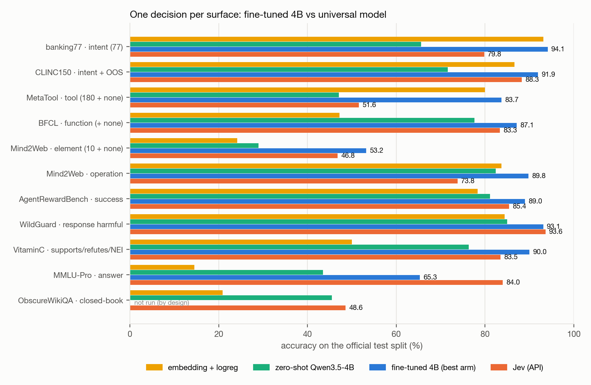
6.1 Classical fixed-schema classification
| banking77 (77 intents, n = 3,080) | Acc | NLL | ECE raw → T | SelAcc@90 |
|---|---|---|---|---|
| Arm 0 embedding + logreg | 93.1 | 0.266 | 0.094 → 0.008 | 96.9 |
| Arm 1 zero-shot 4B | 65.6 | 1.677 | 0.052 → 0.114 | 70.5 |
| Arm 2a-frozen head | 87.9 | 0.424 | 0.018 → 0.017 | 92.9 |
| Arm 2a LoRA + heads | 94.1 | 0.208 | 0.023 → 0.009 | 98.1 |
Arm 2b LoRA + [CLS] (2 seeds) |
93.3 ± 0.3 | 0.242 | 0.019 → 0.009 | 97.2 |
| Arm 3 LoRA LM slots | 93.9 | 0.240 | 0.018 → 0.011 | 97.5 |
| Jev | 79.8 | 0.891 | 0.079 → 0.039 | 84.9 |
On CLINC150 with out-of-scope (n = 5,500): Arm 2a 91.9 % with OOS recall 0.70; Jev 88.3 % and OOS recall 0.79; embedding 86.6 % and 0.55; zero-shot 71.6 % and 0.54. On MASSIVE the embedding floor (86.9 %) beats Jev (74.5 %); on MetaTool the embedding floor (80.0 %, none-recall 0.83) beats Jev (51.6 %, none-recall 0.13) by a wide margin.
Three things stand out. Training is the lever and the head is not: the three LoRA arms sit within 0.8 points of each other and all beat the strong embedding floor, which the frozen 4B state cannot. A generic last-token hidden state is a worse feature than a purpose-built sentence embedding until the backbone is fine-tuned. Zero-shot readout is fragile: forcing a system line that says “answer with a single letter” drops the zero-shot model to 14.4 % on CLINC’s test set because 151 options need two-letter codes; the calibration-split variant selection avoids it, but no fine-tuned arm is exposed to it. Finally, on fixed catalogues a universal model has no way to know what the catalogue means: with 180 bare tool names serialised into every request, Jev sends 3,422 tokens per decision and answers 51.6 %, while a LoRA head holding the catalogue in its parameters sends 60 tokens and answers 83.7 %.
6.2 The agentic surfaces
Browser use (Mind2Web). Accuracy on the element question with a moving “none” option, on the three splits, plus operation accuracy and batch-1 latency:
| element cross-task | element cross-website | element cross-domain | operation | none recall | latency | |
|---|---|---|---|---|---|---|
| Arm 0 pairwise embedding | 24.2 | 27.0 | 20.5 | 83.7 | 0.60 | ≈0 |
| Arm 1 zero-shot 4B | 29.0 | – | – | 82.4 | 0.01 | 59 ms |
Arm 2b LoRA + [CLS] |
51.0 | 46.8 | 45.6 | 89.8 | 0.33 | 55 ms |
| Arm 3 LoRA LM slots | 53.2 | 50.3 | 48.1 | 89.3 | 0.36 | 62 ms |
| Jev | 46.8 | 43.9 | 43.4 | 73.8 | 0.18 | 240 ms |
One epoch on 6,787 steps (about 20 minutes on an A100) gives +6 points over the universal model in distribution and +5 to +6 on unseen websites and domains, +15 on the operation, and a four-fold latency advantage. The tuned models lose three to five points out of distribution and stay ahead. The embedding floor’s high none-recall is not a virtue: it predicts “none” often because it cannot read the candidates.
Tool selection (trained on xLAM, tested on BFCL).
| function | none recall | number of calls | latency | |
|---|---|---|---|---|
| Arm 0 | 47.2 | 0.17 | 38.2 | ≈0 |
| Arm 1 zero-shot | 77.6 | 0.41 | 43.2 | 57 ms |
| Arm 2b | 87.1 | 0.66 | 87.2 | 54 ms |
| Arm 3 | 86.7 | 0.65 | 87.8 | 57 ms |
| Jev | 83.3 | 0.54 | 84.0 | 244 ms |
Synthetic training data transferred to the human benchmark; the tuned models’ main gain over Jev is detecting that no listed function applies (+12 points of none-recall), which is the answer that prevents a bad call.
Agent-run review (AgentRewardBench, three questions over ~2.3k-token trajectories).
| success | looping | side effects | raw ECE | latency | |
|---|---|---|---|---|---|
| Arm 0 | 78.3 | 69.3 | 91.3 | 0.05 | ≈0 |
| Arm 1 zero-shot | 81.1 | 59.1 | 87.8 | 0.04 | 154 ms |
| Arm 2a-frozen (seconds of training) | 87.8 | 87.0 | 92.9 | 0.05 | ≈ zero-shot |
| Arm 2b | 84.3 | 87.8 | 92.9 | 0.013 | 142 ms |
| Arm 3 | 89.0 | 87.0 | 92.9 | 0.03 | 152 ms |
| Jev | 85.4 | 81.1 | 92.9 | 0.02 | 256 ms |
With only 918 labelled trajectories, a linear head trained in seconds on the frozen backbone’s hidden state judges success as well as anything. No model beats the majority class on side effects, which are 6 % positive.
Moderation (WildGuardMix). Per-question accuracy: tuned arms 89.8–90.6 (prompt harmful), 92.1–92.7 (refused), 92.5–93.1 (response harmful) at 58–60 ms; Jev 88.9, 94.3, 93.6 at 245 ms. This is the one agentic surface where the universal model is at least as accurate, and it is the one that most requires judgement over the state rather than recognition of a catalogue.
Across the agentic surfaces, then: with labels, a tuned 4B matches or beats the universal model on every decision, at four to five times lower latency. The right head follows the option regime. Fixed catalogue: a linear head (best accuracy and far fewer tokens). Per-row option sets: the slot-logprob model (best on browser steps and trajectory judging, degraded least out of distribution) or the [CLS]-per-option scorer (best raw calibration, marginally faster). Index heads cannot represent a moving “none” and cannot score more options than they were built with, which rules Arm 2a out of the dynamic surfaces.
6.3 Zero labels, and how many labels it takes
Jev beat our same-interface zero-shot 4B on every task except the fixed catalogues: Mind2Web element +18, BFCL function +6, WildGuard +8 pooled, ANLI 73.4 against a 34.6 floor, BoolQ 91.6 against 63.0, MMLU-Pro +40, AgentRewardBench success +4. It is the best zero-label decision model we measured.
To locate the crossover we ran a label-efficiency curve on VitaminC fact verification (claim + evidence → supports / refutes / not enough information), Figure 5:
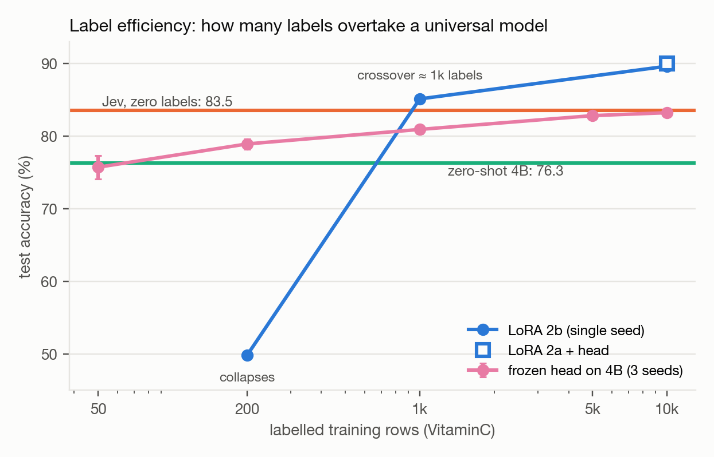
| 0 labels | 50 | 200 | 1,000 | 5,000 | 10,000 | |
|---|---|---|---|---|---|---|
| Jev | 83.5 | – | – | – | – | – |
| Arm 1 zero-shot 4B | 76.3 | – | – | – | – | – |
| Arm 2a-frozen head (3 seeds, seconds) | – | 75.7 ± 1.6 | 78.9 ± 0.7 | 80.9 ± 0.6 | 82.8 ± 0.2 | 83.2 ± 0.1 |
| Arm 2b LoRA (10 GPU-minutes) | – | – | 49.8 | 85.1 | – | 89.6 |
| Arm 2a LoRA + head | – | – | – | – | – | 90.0 |
| Arm 0 embedding | – | – | – | – | – | 50.0 |
A universal model with no labels beats a 4B fine-tuned on anything under roughly a thousand labels on a reading task, and a frozen head never catches it. At a thousand labels LoRA overtakes it by 1.6 points; at ten thousand by six. LoRA at 200 labels collapses to chance, worse than a frozen head at 50: a small run has too few steps to train a new scorer. The practical rule is that below about a thousand labels one should use the universal model or a frozen head, never a short LoRA run.
6.4 Reading, escalation, and what happens when the evidence is missing
Every 4B model and Jev collapse when the evidence is removed or swapped, so all of them read; the embedding floor barely moves because it never did. The difference lies in the failure mode (Figure 6):
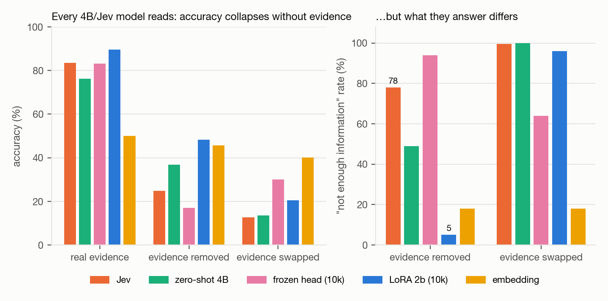
| VitaminC | real evidence | evidence removed | evidence swapped |
|---|---|---|---|
| Jev | 83.5 % (NEI recall 0.71) | 24.8 %, answers NEI on 78 % | 12.7 %, NEI on 99.6 % |
| Arm 1 zero-shot 4B | 76.3 % (0.50) | 36.8 %, NEI on 49 % | 13.6 %, NEI on 100 % |
| Arm 2a-frozen head (10k) | 83.1 % (0.54) | 17.1 %, NEI on 94 % | 30.1 %, NEI on 64 % |
| Arm 2b LoRA (10k) | 89.6 % (0.69) | 48.2 %, NEI on 5 % | 20.5 %, NEI on 96 % |
| Arm 0 embedding | 50.0 % | 45.7 % | 40.1 % |
When the evidence is absent, Jev escalates (“not enough information”) 78 % of the time. The fine-tuned model that beats it by six points with evidence present has learned claim-only priors and guesses “supports” or “refutes” 95 % of the time, with confidence. Its extra accuracy comes with a worse safety profile on inputs it was never trained to see. Adding explicit no-evidence rows to training would presumably fix this, and the point is that a universal model arrives with that behaviour while a tuned one has to be given it.
The same conservatism shows up in the escalation analysis over every dataset (Figure 7, from saved predictions). At a confidence threshold of 0.9, Jev covers the smallest fraction of rows of any model on almost every set (on Mind2Web 2 % against 39 % for the best tuned arm) with error rates among covered rows that are comparable to, and on the judgement sets lower than, the tuned model’s. On VitaminC it covers 39 % of rows with 3.7 % of those wrong; the 10k-label LoRA covers 67 % with 1.9 % wrong. Jev’s probability of “not enough information” detects genuinely evidence-less rows with AUROC 0.89 (LoRA 0.94, frozen head 0.90). On CLINC its out-of-scope recall is 0.79 against 0.70 for our best tuned model. In short, Jev is the safest model to route on and the most expensive in fallbacks.
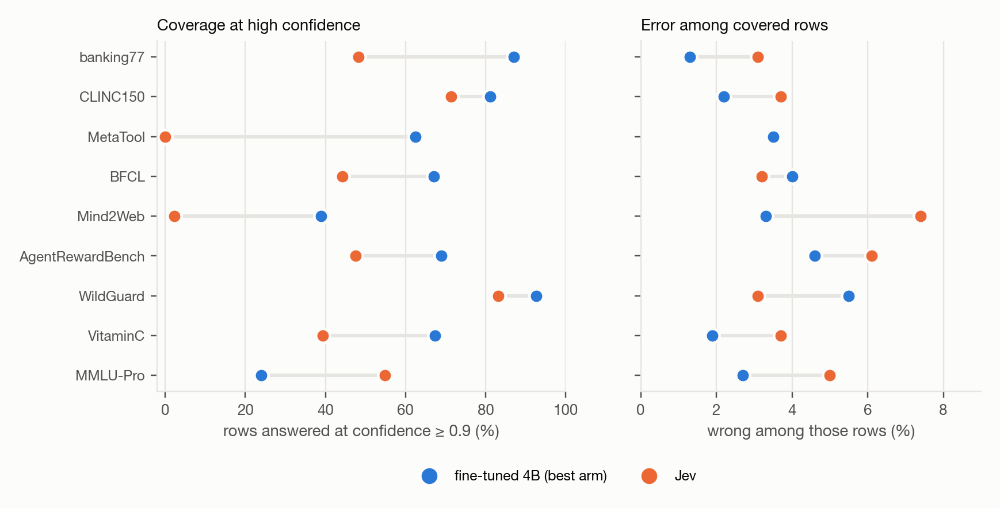
6.5 Decomposition: a negative result
TypeSafe’s guidance and the strongest outside result [46] hold that Jev should be asked several narrow typed questions rather than one broad one; a phishing benchmark reported 62.6 % with one question and 95.0 % with five questions whose weights were fitted on a thousand emails. We tested this on VitaminC by re-posing the three-way question as three booleans (does the evidence address the claim; does it support it; does it contradict it) and recombining them by fixed rules:
| single 3-way | addresses / supports / contradicts | recombined 3-way | |
|---|---|---|---|
| Jev | 83.5 | 84.5 / 91.1 / 87.9 | 79.7 |
| Arm 1 zero-shot 4B | 76.3 | 78.9 / 75.4 / 43.7 | 54.6 |
| Arm 2a-frozen head | 83.2 | 91.9 / 85.8 / 84.8 | 81.8 |
| Arm 2a LoRA | 90.0 | 93.4 / 94.5 / 91.9 | 89.9 |
The individual sub-questions are excellent (Jev answers “does the evidence support the claim?” at 91 %), but no model gains from recombining them; when the decomposition is close to a relabelling of the original question it adds noise. The published gains presumably require sub-questions that are genuinely complementary and a fitted combiner, which is itself a small supervised model.
6.6 Knowledge: a public benchmark and an uncontaminated probe
We measured knowledge twice (Figure 8). On MMLU-Pro Jev scores 84.0 %; the best one-pass 4B reaches 65.3 ± 0.3 (Arm 2a, 3 seeds) after LoRA and 43.5 % zero-shot; a frozen head on the 4B’s hidden state gets 30.9 ± 0.5 and the embedding floor 14.5. MMLU-Pro is a public test set and Jev’s training data are undisclosed, so we did not know whether the nineteen-point gap measured knowledge or exposure. ObscureWikiQA was built to answer that without a contamination probe:
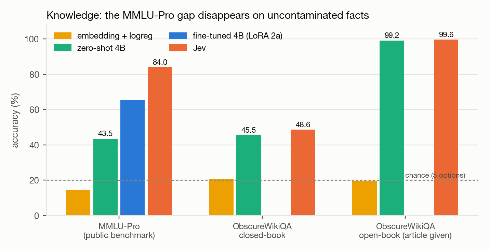
| 253 questions, chance 20 % | closed-book | open-book |
|---|---|---|
| Arm 0 embedding | 20.9 | 19.8 |
| Arm 1 zero-shot 4B | 45.5 | 99.2 |
| Jev | 48.6 | 99.6 |
On facts that exist in pretraining corpora but in no benchmark, Jev’s closed-book knowledge is within the ±6-point confidence interval of a 4B model’s, and both read a supplied article essentially perfectly. Its MMLU-Pro number therefore reflects that benchmark, not a general knowledge advantage over small open models. We did not fine-tune on ObscureWikiQA by design (33 training rows would test memorisation, not knowledge). This is the most useful thing the two probes together tell a practitioner: if a decision depends on parametric knowledge, neither system is the right tool, and the state should carry the facts.
6.7 Calibration
Calibration is a property of the held-out split, not of the model (Figure 9). Raw ECE ranged 0.01–0.11 across our tuned arms; the xLAM-trained tool model was over-confident on BFCL until a temperature of about 2.7 was fitted on BFCL’s calibration split, and Arm 2a on CLINC needed T ≈ 2.95. Jev’s raw ECE ranged 0.014 (CLINC) to 0.19 (MetaTool), with 0.02–0.03 on the reading and judgement sets and fitted temperatures near 1 on most of them; it is the best-calibrated model as shipped on the surfaces it is good at. After a single temperature every LoRA arm lands at 0.01–0.06 and Jev at 0.01–0.07; the zero-shot readout is the exception, and on banking77 and MetaTool a temperature fitted on the calibration split made its test ECE worse (Table 3). Arm 2b was the best-calibrated tuned design (raw ECE 0.013–0.02 on the agentic sets). A methodological note: an early version of this study reported Jev’s raw ECE on CLINC as 0.36; that was an artefact of flooring probabilities rounded to zero at 0.005 across 151 options, and was corrected to 0.014 with a 1e-4 floor. Rounded API probabilities need a floor chosen with the option count in mind.
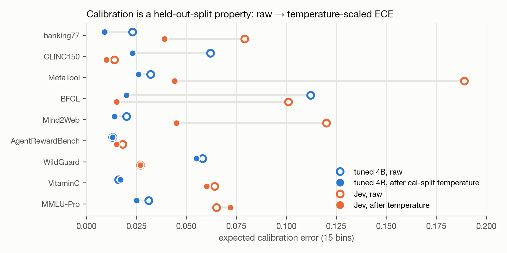
6.8 Latency
Batch-1 latency on real rows (A100, merged LoRA, bfloat16; Jev from the same client) is in Figure 10 and Table 11.
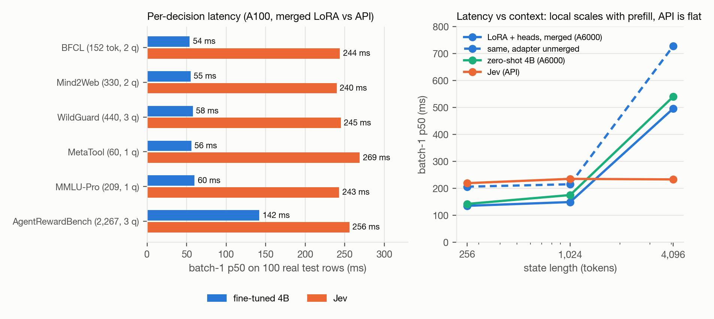
| task | tokens/request | tuned 4B p50 | Jev p50 |
|---|---|---|---|
| tool selection (BFCL, 2 q) | 152 | 54 ms | 244 ms |
| browser step (Mind2Web, 2 q) | 330 | 55–62 ms | 240 ms |
| moderation (WildGuard, 3 q) | 440 | 58–60 ms | 245 ms |
| catalogue routing (MetaTool, 2a) | 60 | 56 ms | 269 ms |
| knowledge MCQ (MMLU-Pro) | 209 | 60 ms | 243 ms |
| agent-run review (ARB, 3 q) | 2,267 | 142–152 ms | 256 ms |
Under the synthetic protocol, merged LoRA has essentially the zero-shot model’s latency (148 vs 142 ms on a short prompt on the A6000; 545 vs 540 ms at 4k tokens); the unmerged adapter adds about 60 ms. Listing 100 options as [CLS] lines costs Arm 2b 16 % over the fixed-head arm. Jev’s latency is flat in context length (215–235 ms from 256 to 4k tokens) because the network floor dominates; ours scales with prefill.
7. Serving: what each arm costs to train and run, and how much load one GPU carries
This section answers the operational question a team faces after the accuracy tables: what does it cost to build and serve each design on each surface, and how does a self-hosted classifier, which is bound by the capacity of the GPU it runs on, compare with an API that scales out by accepting more concurrent calls?
7.1 Training cost per arm and task
Table 12 gives the wall-clock of one training run (including the evaluation pass) for each arm on each task, and its cost at the on-demand list price of the GPU it ran on. These are upper bounds: they include evaluation, the runs used a plain training loop with gradient checkpointing above 1,024 tokens and no throughput tuning, and a second GPU class would change them roughly in proportion to its price-performance.
| task (train rows × prompt length, epochs) | frozen head | 2a LoRA + heads | 2b LoRA + [CLS] |
3 LoRA LM |
|---|---|---|---|---|
| banking77 (8.7k × 0.6k, 2 ep, A6000) | < 1 min | 17 min, $0.10 | ≈110 min, $0.65 | ≈110 min, $0.65 |
| CLINC150 (10k × 0.8k, 2 ep, A6000) | < 1 min | ≈60 min, $0.35 | – | – |
| MetaTool (10k × 60 / 1k / 1.2k tokens, 1 ep, A100) | 1 min | 21 min, $0.40 | 67 min, $1.20 | 83 min, $1.50 |
| BFCL/xLAM (10k × 1k, 1 ep, A100) | – | – | 22 min, $0.40 | 25 min, $0.45 |
| Mind2Web (6.8k × 1.5k, 1 ep, A100) | 1 min | – | 20 min, $0.35 | 23 min, $0.40 |
| AgentRewardBench (918 × 3k, 1 ep, A100) | < 1 min | 17 min, $0.30 | 17 min, $0.30 | 18 min, $0.30 |
| WildGuardMix (10k × 1.5k, 1 ep, A100) | 1 min | 58 min, $1.05 | 56 min, $1.00 | 61 min, $1.10 |
| MMLU-Pro (8.4k × 2k, 1 ep, A100) | 1 min | 50 min, $0.90 | 45 min, $0.80 | 48 min, $0.90 |
| VitaminC (10k × 0.4k, 1 ep, A100) | seconds | 12 min, $0.20 | 11 min, $0.20 | – |
Two patterns matter. Training cost is set by prompt length times rows, not by the head: on MetaTool the linear head is three to four times cheaper to train than the option-listing designs because its prompt is 60 tokens instead of a thousand. And every run in the table costs less than two dollars; the frozen head costs effectively nothing and is the right first step below a thousand labels (Section 6.3). The cost that dominates in practice is the labels, not the GPU.
7.2 Serving cost per million decisions
Self-hosted cost is GPU time divided by decisions produced, so it depends on prompt length and on how full the GPU is. Table 13 gives the cost of each arm on each task on a fully used A6000 at the measured batched throughput (about 8.7k prefill tokens per second), against Jev’s billed cost on the same rows.
| task | prompt tokens (2a / 2b / 3) | self-hosted 2a | self-hosted 2b or 3 | Jev (billed) |
|---|---|---|---|---|
| intent routing, banking77 | 50 / ≈620 / ≈640 | $1.6 | $7 | $70.8 |
| intent + OOS, CLINC150 | 60 / ≈850 / ≈870 | $1.6 | $10 | $103 |
| catalogue routing, MetaTool | 60 / 958 / 1,151 | $1.6 | $11–13 | $143.7 |
| tool selection, BFCL (2 q) | – / 152 / 152 | – | $0.9 | $11.3 |
| browser step, Mind2Web (2 q) | – / 330 / 330 | – | $1.9 | $16.9 |
| moderation, WildGuard (3 q) | 440 | $1.7 | $1.7 | $10.1 |
| agent-run review, ARB (3 q) | 2,267 | $8.6 | $8.6 | $32.3 |
| knowledge MCQ, MMLU-Pro | – / 209 / 209 | – | $2.4 | $27.4 |
| fact verification, VitaminC | ≈350 | $3.9 | $3.9 | $17.3 |
The cost structures differ in kind. Jev bills tokens, so a fixed catalogue serialised into every request is its worst case (MetaTool, banking77, CLINC), and it sends two to three times more tokens than our prompts for the same row because criteria are serialised. Self-hosting bills time, so it is flat in option count for a linear head that holds the catalogue in its parameters, and it is cheap only when the GPU is busy. On the agentic surfaces the difference is 4–13×; on catalogues it is 40–90×.
7.3 Capacity, concurrency and the break-even load
An API request is one of many the provider is serving; the caller adds throughput by opening more connections, and the provider’s fleet absorbs it. A self-hosted classifier has a fixed budget of GPU compute, and every decision spends some of it. Figure 11 shows what that means in practice.
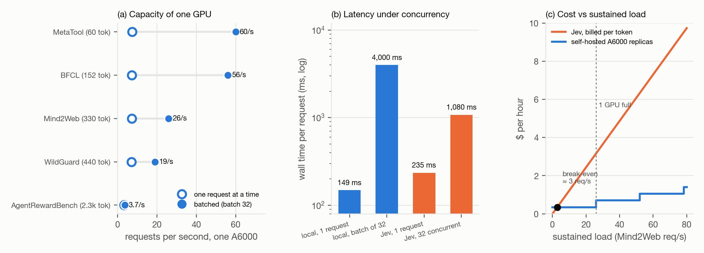
Capacity is prefill-bound. A decision is one prefill of the prompt; there is no decode phase. The compute per request is therefore proportional to prompt length, and a GPU has a fixed prefill budget (about 8.7k tokens per second on the A6000 with the plain HF forward pass, roughly 2.5× that on an A100). One request at a time, the A6000 answers a short prompt in about 135 ms regardless of length, because kernel launch overhead dominates below a few hundred tokens; batching 32 requests together removes that overhead and lifts the modelled ceiling to 56 requests per second on 152-token tool-selection prompts and 26 per second on 330-token browser steps, but only from 3.3 to 3.7 per second on 2.3k-token trajectories, which are compute-bound at batch 1 already. Batching helps short prompts and does almost nothing for long ones.
Measured: raising the ceiling on one dataset. To check the model above against a real serving stack we took the Mind2Web decision model (Arm 3, adapter merged) and measured it on one A100 under closed-loop load, where c clients each keep one request in flight, for c from 1 to 128 (Figure 12). Two engines were compared on the same 512 real test prompts: the plain HF forward pass with static batching (a batch of c requests padded to the longest prompt), and vLLM with continuous batching, its fused DeltaNet kernels and prefix caching, reading the decision the serving-native way, by ending the prompt at the answer slot and taking the top-k log-probabilities of one generated token. Predictions from the two engines agreed on 94–96 % of rows.
| engine | 1 client | 4 | 16 | 32 | 128 | ceiling |
|---|---|---|---|---|---|---|
| HF forward, one request at a time | 17.1 req/s, 58 ms | – | – | – | – | 17 req/s |
| HF forward, static batching | – | 33.4 req/s, 116 ms | 31.9 req/s, 506 ms | 12.5 req/s, 1.1 s | – | 33 req/s |
| vLLM continuous batching, defaults | 10.4 req/s, 90 ms | 20.1 req/s, 192 ms | 49.2 req/s, 320 ms | 50.2 req/s, 607 ms | 50.8 req/s, 2.5 s | 51 req/s |
| vLLM, 32k-token batch budget, 512 sequences | 11.5 req/s, 80 ms | 19.9 req/s, 194 ms | 41.0 req/s, 391 ms | 55.8 req/s, 568 ms | 72.9 req/s, 1.7 s | 73 req/s |
vLLM, decision read via prompt_logprobs |
3.4 req/s, 256 ms | 5.0 req/s, 748 ms | 5.9 req/s, 2.5 s | 6.6 req/s, 4.7 s | 7.1 req/s, 16.7 s | 7 req/s |
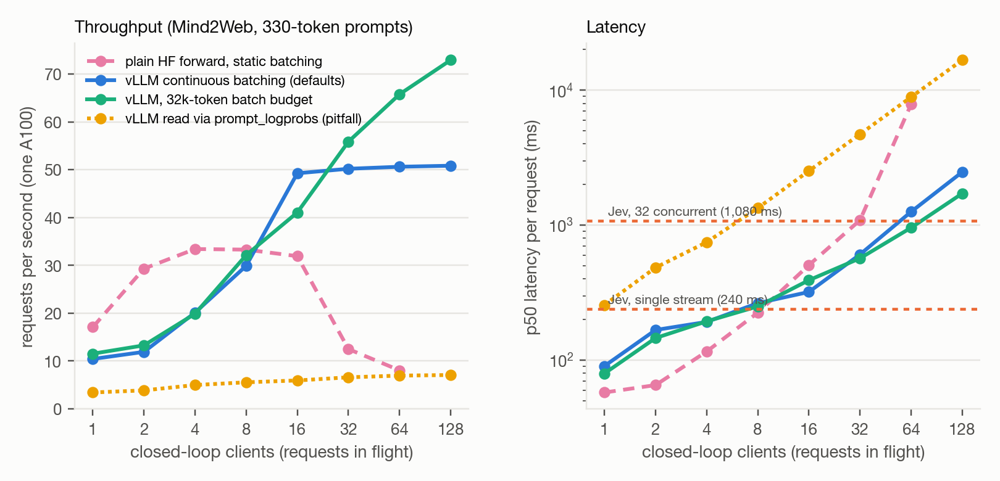
Four things follow. First, the static batcher’s ceiling is twice the one-at-a-time rate and it collapses beyond 16 clients: Mind2Web prompts range up to 1,536 tokens against a 330 median, so a large batch pays for padding and the reference kernels pay again. Continuous batching removes both costs and raises the ceiling to three times the one-at-a-time rate with default settings, and to 4.3× with a larger batch budget, at which point the GPU is compute-bound and latency grows linearly with the number of clients (Little’s law: 73 requests per second × 1.7 s ≈ 128 in flight). Second, the serving stack costs something at the bottom: a single request takes 80–90 ms through the HTTP server against 58 ms in-process, so at very low load the plain forward pass is the faster path, and the crossover is at about four clients. Third, the readout matters as much as the engine: asking the server for log-probabilities at every prompt position (prompt_logprobs, the naive way to score several slots in one call) forces a top-k over a 248k-token vocabulary at some 360 positions and bypasses prefix caching, and costs seven times the throughput; a decision model behind an API must be read at one generated position, or with one prefix-cached request per question. Fourth, the API’s flat latency is a single-stream property too: Jev’s per-request time rose from 235 ms to 1,080 ms when we sent 32 requests concurrently from one client, so both sides trade latency for throughput, and the API’s behaviour beyond 32 concurrent calls, where provider rate limits apply, is not something we measured.
Where the cost curves cross. Self-hosted cost is a step function: one GPU costs the same whether it answers one request per second or the 26 per second it can sustain on browser steps, and a second replica doubles the cost and the capacity. The API is a line through the origin. For Mind2Web-shaped requests the lines cross at about 3 requests (6 decisions) per second of sustained load on an A6000, and at about 9 per second on an A100 at $1.09/hr, which the measured vLLM ceiling of 73 per second exceeds eight-fold; on catalogue routing the crossing is at under one request per second, on trajectory review at about one per second. Below the crossing a dedicated GPU idles and the API is cheaper in absolute dollars; above it self-hosting wins and the gap grows with volume until a GPU is full, at which point a replica resets the step. The per-decision cost of Table 13 is what the staircase converges to when every replica is busy.
Raising the ceiling. Six levers change the self-hosted numbers. The first was measured above (continuous batching with fused kernels and prefix caching: 2.2× the static batcher’s ceiling and 4.3× the one-at-a-time rate on the A100); the others were not applied, so Table 13 and Figure 11 remain conservative for the local side:
- A serving engine with continuous batching and prefix caching. Requests arrive asynchronously, so a scheduler that forms batches on the fly and caches the shared prefix (the catalogue and question text in a fixed-schema prompt) gives the batched throughput without waiting for a full batch, and removes the repeated prefill of the constant part of the prompt. Measured on Mind2Web: 51 requests per second with defaults, 73 with a 32k-token batch budget, against 33 for static batching (Table 14). Prefix caching was not isolated; its effect on Mind2Web, where prompts share only the system line and question text, is expected to be small, and larger on fixed catalogues.
- Quantisation. FP8 on Hopper or Ada-class GPUs and INT4/AWQ weights roughly halve prefill time on a 4B model and let two replicas share a card; accuracy loss on a merged LoRA classifier can be checked on the calibration split before deployment.
- Fused kernels for the backbone. The DeltaNet layers ran with reference kernels; the fused implementations are several times faster on those layers.
- Prompt design. The cheapest token is the one not sent. A linear head holds the catalogue in its parameters (60 tokens for MetaTool against 958–1,151 for the option-listing arms and 3,422 for the API), and truncating the state to what the decision needs is a capacity lever before it is an accuracy lever.
- Horizontal replicas and autoscaling. Throughput scales linearly with GPUs behind a load balancer; cost per decision stays flat as long as replicas are busy, and per-second-billed serverless GPUs remove the idle cost for bursty traffic, at the price of cold starts of a few seconds for an 8 GB model.
- A larger GPU. An H100 has about three times the A100’s prefill throughput at about three times its price, so it changes the ceiling and the batch-1 latency, not the cost per decision.
The operational conclusion is that a self-hosted 4B classifier is the cheaper and faster choice once a surface carries a few requests per second of sustained load, that its ceiling per GPU is set by prompt length, and that a serving engine alone moves that ceiling by a factor of two to four on 330-token prompts, with quantisation, prompt design and replicas on top of that. Below that load, or for traffic that arrives in bursts, the API’s ability to absorb concurrency without an idle GPU is worth its per-token price.
7.4 A Jev-like contract on the 4B: encode the state once, fan the questions out
Jev’s serving contract has three parts that our arms did not all have: the state is ingested once, every question is evaluated against it independently, and a marginal question costs only its own tokens (TypeSafe’s documentation [38]). Arms 2a, 2b and 3 put all questions in one prompt, so questions see each other and the adapter changes how the state itself is represented. We built a design that meets the contract without touching the original weights’ representation of the state, and tested it on WildGuardMix (three independent boolean questions over 440-token states, the surface where Jev was strongest).
Design. The state is prefilled once by the base model with adapters disabled, producing the hybrid cache (key-value tensors for the attention layers, convolution and recurrent states for the DeltaNet layers). Each question is a short segment (question text, options, the end of the user turn and the assistant header, about 40 tokens) that continues from that cache as its own batch row; the cache is expanded by indexing every cached tensor along the batch axis, so n questions over b states run as one batch of b·n rows with no question able to attend to another. The answer is read at each segment’s last token. Three variants leave the base weights untouched: a zero-shot readout; linear heads trained on the segment’s hidden state (seconds); and a segment-only LoRA, active only while question segments are processed, so the state cache is still exactly the base model’s and the adapter only changes how a question reads it. That adapter is served unmerged, since merging would alter the prefill. A unit test checks that fanned-out logits equal an isolated full forward of state plus that one question to 1e-4 on both layer types, on the fused kernels.
| WildGuardMix, per question (%) | prompt harmful | response harmful | refused | pooled | raw ECE |
|---|---|---|---|---|---|
| zero-shot, all questions in one prompt (Arm 1) | 85.1 | 85.0 | 82.0 | 84.1 | 0.104 |
| zero-shot, fan-out | 84.4 | 86.4 | 81.0 | 83.9 | 0.025 |
| frozen head, shared prompt (Arm 2a-frozen) | 88.3 | 92.2 | 91.8 | 90.8 | 0.064 |
| frozen head, fan-out | 88.6 | 92.2 | 92.5 | 91.1 | 0.055 |
| LoRA, shared prompt (Arm 3) | 89.8 | 93.1 | 92.7 | 91.8 | 0.059 |
| segment-only LoRA, fan-out | 90.0 | 93.2 | 93.4 | 92.2 | 0.053 |
| Jev | 88.9 | 93.6 | 94.3 | 92.3 | 0.027 |
| latency, one A100, batch 1 | 1 question | 3 | 6 | 12 | 24 |
|---|---|---|---|---|---|
| all questions in one prompt (Arm 3 template, one pass) | 65 ms | 65 ms | 65 ms | 71 ms | 84 ms |
| fan-out: state prefill (83 ms) + isolated questions | 163 ms | 164 ms | 170 ms | 179 ms | 233 ms |
| fan-out: questions on an already-cached state | 88 ms | 86 ms | 89 ms | 94 ms | 138 ms |
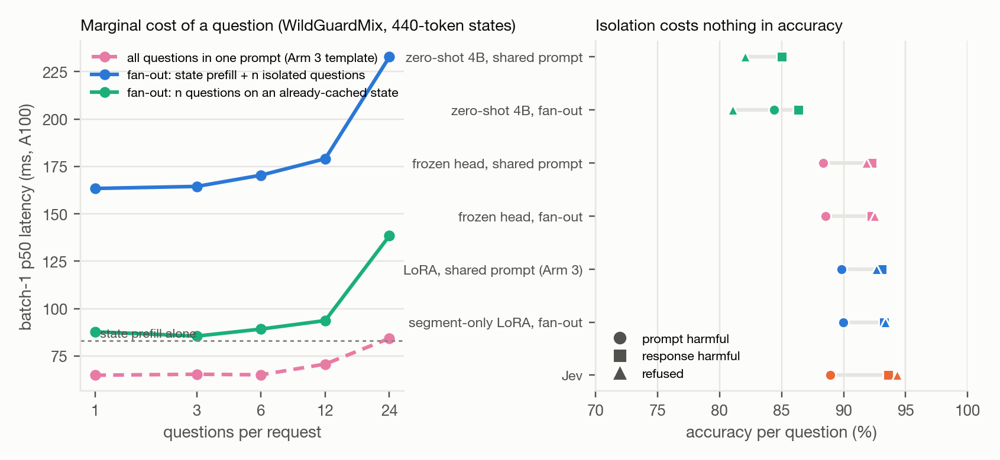
Reading. The contract is met: a question costs about two milliseconds at the margin (88 ms for one question on a cached state, 138 ms for twenty-four), questions are isolated, and the state representation is the base model’s, so the same cached state can serve any later question or any other task’s adapter. Accuracy does not suffer; it improves slightly, and the zero-shot calibration improves a great deal, presumably because a single-question format is closer to what the base model expects. What the contract costs is a second forward pass. On a 440-token state both the prefill and the segment pass sit at the launch-bound floor of a 32-layer forward on this GPU (about 65–85 ms each), so the fan-out is 2.5× slower than the one-pass shared prompt at batch 1 (6 against 15 requests per second), batching sixteen requests only brings it level with the shared prompt’s unbatched rate, and re-asking a cached state costs more than a whole shared-prompt request. The shared prompt has an equally flat marginal cost (65 ms for one to six questions) because its extra questions are also just tokens. The fan-out pays off only where the state is long enough for prefill to dominate, where the same state is queried repeatedly by different questions or adapters (an agent harness asking new questions about the same page or trajectory), or where isolation itself is the requirement. The design is about 120 lines on top of the transformers cache and needs no serving-engine support, which is the practical point: the Jev interface is not architectural magic, it is a cache discipline any small model can adopt.
8. Discussion
8.1 What the universal decision model changed
Three things, none of which is accuracy. It changed the interface: state plus typed questions in, probabilities out, in one pass, with no generation to parse and no schema violations (zero parse failures in about 50,000 requests here). It changed who can build a decision component: a product engineer with no labels, no GPU and no training loop now has a calibrated classifier by writing a question. And it changed where decisions get made: the surfaces in Section 3 were being handled by generating LLMs or by hand-written heuristics, and a single fast, typed, calibrated call made them classification problems. Our whole experimental design, including the four arms, is downstream of that interface; we would not have posed browser-step selection as a one-pass decision with a moving “none” option without it.
8.2 Where a fine-tuned small model does the better job
In the majority of the cases we measured. Given a few thousand labels for a fixed workflow and ten to eighty minutes on a rented GPU, a 4B model with a LoRA adapter and any of three heads matched or beat the universal model on every agentic decision, by 4–15 points on the decisions that involve a catalogue or a candidate list, at 55–85 ms and $1–9 per million decisions. The head design is a second-order choice. The order of magnitude in cost and the factor of four in latency come from serving a small model on a GPU rather than from cleverness, and they are the numbers a system that makes a decision on every agent step actually feels. On fixed catalogues even a sentence-embedding logistic regression, trained on a laptop, beats the universal model.
8.3 Where the universal model is better, and why that matters
The zero-label regime, up to about a thousand labels, is Jev’s on every reading task. It is better at the questions that require judgement over the state rather than recognition of a catalogue (BoolQ, ANLI, WildGuard’s refusal and response-harm questions). It escalates when the input does not contain what the question needs, a behaviour our tuned model had to be taught and was not. It is the most conservative scorer at high confidence and the best calibrated as shipped. Its per-request latency is flat in context length, it absorbs concurrency without an idle GPU, and it costs nothing when unused. Outside testers report the same profile: strong when a decision is decomposed into typed questions, safe to route on because its wrong answers carry hedged confidence, weak on single broad questions, counting and large states [46].
These are not marginal properties. The reason to want a decision model in an agent loop is often not the mean accuracy but the behaviour at the tail, and a model that says “not enough information” on 78 % of evidence-less inputs is doing the job that a confidence threshold is supposed to do. A team without an ML function cannot build that from scratch, and a team with one still benefits from having it on day one.
8.4 A decision procedure
The results support a simple rule (Figure 14). Start with the universal model: it bootstraps the surface, produces the first labels, and covers the long tail. Log its decisions and the outcomes. Once a fixed workflow has about a thousand labelled decisions, train a frozen head on a small open model’s hidden states (seconds, no GPU) and compare; once it has a few thousand and the volume exceeds a few requests per second, train a LoRA adapter with the head that matches the option regime and serve it merged. Keep the universal model for new question types, for escalation on inputs the tuned model was not trained to refuse, and for any surface whose labels never accumulate. The two are complements: the universal model is how classification reaches people who are not in the machine-learning field, and the tuned small model is what the high-volume core of the system ends up running.
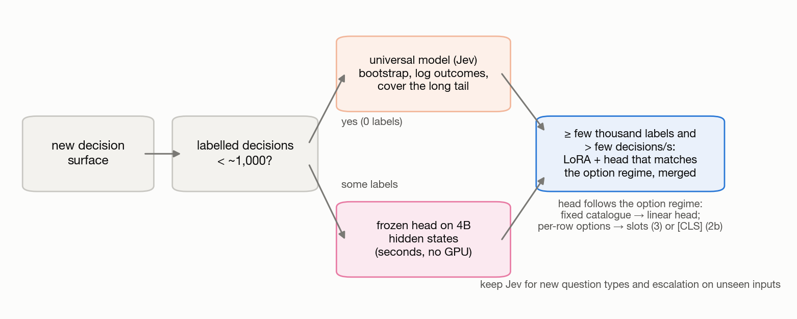
9. Limitations
Single seed on the agentic sets and on every LoRA point of the label curve; seed spread was 0.3–1.6 points where measured. Jev is non-deterministic (2 of 987 identical answers on re-query) and every Jev number is one draw. Jev’s criteria were the bare option strings, which is the information our arms received, but richer criteria and tool descriptions might help it, particularly on MetaTool. Local latencies and the per-task capacity figures of Section 7.3 are an unoptimised bfloat16 path and therefore lower bounds; the measured serving curve covers one dataset on one GPU, reads one decision per request, and did not isolate prefix caching; the fan-out latency sweep was timed with a freshly initialised adapter of the trained shape (latency does not depend on weight values) because the trained adapter was not retained, and its “cached state” timings include copying the cache; Jev’s latencies include network from a laptop, and its behaviour above 32 concurrent requests was not measured. GPU prices are one cloud’s on-demand list prices at the time of the study. MMLU-Pro is a public test set. Mind2Web candidates come from the original ranker, and 27 % of cross-task targets fall outside them. AgentRewardBench’s side-effect question is nearly constant. WildGuard’s calibration split shares near-duplicate prompts with its training split. VitaminC’s calibration split shares the training distribution, and the contrastive-pair consistency we planned to compute from the saved predictions was not computed. ObscureWikiQA questions are model-generated and model-verified (82 % pass rate), from article introductions, with a 31-row calibration split. Trained arms were not run on BoolQ, MASSIVE, ANLI or SST-5, and Arm 2a was not run on the dynamic-option sets. Every one of these is recorded in the repository with the decision that produced it.
10. Future work: reinforcement learning from the environment, not from the confusion matrix
The obvious next step for a decision model is reinforcement learning, and the obvious formulation of it is wrong. If the reward for a decision is whether it was a false positive or a false negative, the policy gradient is estimating the gradient of a weighted classification loss, and one could have written that loss down and back-propagated it directly. Class-weighted cross-entropy, cost-sensitive learning and threshold tuning already exist; running them through a sampler and a baseline is the same optimisation with more variance and a new name. RLVR works for generators because the verifier scores an object the model cannot be trained on by supervision (a whole reasoning trace) and because the reward is available for unlabelled inputs. Neither holds for a classifier whose reward is a comparison against a label.
The hypothesis worth testing is that the reward should come from the environment the decision acts in. A browser-step decision is followed by a page transition, a task completion or a dead end. A tool-selection decision is followed by a call that succeeds, errors or returns nothing useful. A moderation decision is followed by an appeal or a report. An agent-run judgement is followed by a retry that works or does not. In each case the outcome is observable, delayed, sometimes noisy, and available at volumes far beyond what anyone will label; it is a contextual-bandit signal [32], and it is not reducible to a fixed loss because it depends on what the rest of the system does with the probability. Optimising the decision model against it would train, for instance, the escalation behaviour of Section 6.4 directly: a “not enough information” answer that leads to a successful fallback earns reward, a confident guess that leads to a failed action loses it, and the model learns when to abstain from what happened rather than from a labelled abstention class it was never shown.
TypeSafe’s own description of Jev’s training, “Reinforcement Learning for Calibrated Decisions”, with probabilities “optimized against outcomes” [37, 38], suggests that something like this is what a universal decision model is already made of, which would explain both its escalation behaviour and its calibration as shipped. That is our reading, not a disclosed fact. What we would explore is whether the same signal can be applied to a purpose-tuned small model after supervised initialisation, at the point where the labelled curve of Section 6.3 flattens. The open problems are the ones the bandit and RLHF literature already names: credit assignment when the outcome arrives many steps after the decision, the counterfactual problem that only the chosen option’s outcome is observed, reward hacking when the environment’s success signal is gameable [33], and keeping the probabilities calibrated while optimising a reward that is indifferent to them. Recent work on process-level verifiable rewards for agents [50] and on learning reward models from heterogeneous feedback [49] offers starting points. The prize is a decision model whose confidence means what it should mean for the system it is embedded in, learned from that system’s own logs rather than from a confusion matrix.
11. Conclusion
Universal decision models democratised classification. They gave a calibrated, typed, one-pass classifier to people who had never trained one and pointed it at decisions the field had not treated as classification: browser steps, tool calls, agent-run review, moderation, model routing. Measured on those surfaces with the same interface and the same rows, a purpose-tuned classifier on a 4B open model does the better job in the majority of labelled cases, by a clear margin in accuracy on catalogue and candidate-list decisions, by a factor of four in latency and by four to ninety times in cost per decision, after minutes of training. Even a sentence embedding with logistic regression wins on fixed catalogues. The universal model remains the right tool with no labels, on reading and judgement over the state, wherever conservative escalation matters more than mean accuracy, and wherever load is too low or too bursty to keep a GPU busy; its closed-book knowledge, once contamination is controlled for, is that of a small model. Something like it is needed so that people outside the machine-learning field experience what a classifier can do; something like ours is what the high-volume core of the system will end up running. The next step for both is to learn from the environment the decision acts in, and the way not to do that is to rename supervised learning.
Use of AI tools
AI coding assistants were used to help write experiment code and to edit and proofread the manuscript; ObscureWikiQA questions were generated and verified by language models as described in Section 5. The author designed the study, checked all results against the saved outputs, and takes full responsibility for the content.
Data Availability Statement
Code (data builders, training and evaluation code, every table and figure) is available at https://github.com/vamshibobby/decisions-without-generation under the MIT licence; references in this paper to “the repository” mean this repository. Raw results and predictions are in the public Hugging Face dataset saivamshiatukuri/decision-model-results, cached hidden states in saivamshiatukuri/decision-model-hidden-cache, and the fine-tuned Mind2Web decision model in saivamshiatukuri/qwen3.5-4b-decision-mind2web. The remaining checkpoints are available from the author on request.
Conflicts of Interest
The author declares no conflicts of interest. The author has no affiliation with TypeSafe.
References
- E. J. Hu et al. LoRA: Low-Rank Adaptation of Large Language Models. arXiv:2106.09685, 2021.
- C. Guo, G. Pleiss, Y. Sun, K. Q. Weinberger. On Calibration of Modern Neural Networks. ICML 2017; arXiv:1706.04599.
- Y. Geifman, R. El-Yaniv. Selective Classification for Deep Neural Networks. NeurIPS 2017; arXiv:1705.08500.
- Z. Zhao, E. Wallace, S. Feng, D. Klein, S. Singh. Calibrate Before Use: Improving Few-Shot Performance of Language Models. ICML 2021; arXiv:2102.09690.
- W. Yin, J. Hay, D. Roth. Benchmarking Zero-shot Text Classification: Datasets, Evaluation and Entailment Approach. EMNLP 2019; arXiv:1909.00161.
- L. Tunstall et al. Efficient Few-Shot Learning Without Prompts (SetFit). arXiv:2209.11055, 2022.
- N. Reimers, I. Gurevych. Sentence-BERT: Sentence Embeddings using Siamese BERT-Networks. EMNLP 2019; arXiv:1908.10084.
- I. Casanueva et al. Efficient Intent Detection with Dual Sentence Encoders (banking77). arXiv:2003.04807, 2020.
- S. Larson et al. An Evaluation Dataset for Intent Classification and Out-of-Scope Prediction (CLINC150). EMNLP 2019; arXiv:1909.02027.
- C. Clark et al. BoolQ: Exploring the Surprising Difficulty of Natural Yes/No Questions. NAACL 2019; arXiv:1905.10044.
- J. FitzGerald et al. MASSIVE: A 1M-Example Multilingual NLU Dataset with 51 Typologically-Diverse Languages. arXiv:2204.08582, 2022.
- Y. Nie et al. Adversarial NLI: A New Benchmark for Natural Language Understanding. ACL 2020; arXiv:1910.14599.
- R. Socher et al. Recursive Deep Models for Semantic Compositionality Over a Sentiment Treebank. EMNLP 2013.
- Y. Wang et al. MMLU-Pro: A More Robust and Challenging Multi-Task Language Understanding Benchmark. arXiv:2406.01574, 2024.
- S. Han et al. WildGuard: Open One-Stop Moderation Tools for Safety Risks, Jailbreaks, and Refusals of LLMs. arXiv:2406.18495, 2024.
- Y. Huang et al. MetaTool Benchmark for Large Language Models: Deciding Whether to Use Tools and Which to Use. arXiv:2310.03128, 2023.
- S. G. Patil et al. The Berkeley Function Calling Leaderboard (BFCL): From Tool Use to Agentic Evaluation of Large Language Models. ICML 2025.
- Z. Liu et al. APIGen: Automated Pipeline for Generating Verifiable and Diverse Function-Calling Datasets (xLAM). arXiv:2406.18518, 2024.
- X. Deng et al. Mind2Web: Towards a Generalist Agent for the Web. NeurIPS 2023; arXiv:2306.06070.
- X. H. Lù et al. AgentRewardBench: Evaluating Automatic Evaluations of Web Agent Trajectories. arXiv:2504.08942, 2025.
- T. Schuster, A. Fisch, R. Barzilay. Get Your Vitamin C! Robust Fact Verification with Contrastive Evidence. NAACL 2021; arXiv:2103.08541.
- S. Yang, J. Kautz, A. Hatamizadeh. Gated Delta Networks: Improving Mamba2 with Delta Rule. arXiv:2412.06464, 2024.
- L. Zheng et al. Judging LLM-as-a-Judge with MT-Bench and Chatbot Arena. NeurIPS 2023; arXiv:2306.05685.
- C. Zheng et al. Large Language Models Are Not Robust Multiple Choice Selectors. ICLR 2024; arXiv:2309.03882.
- A. Holtzman et al. Surface Form Competition: Why the Highest Probability Answer Isn’t Always Right. EMNLP 2021; arXiv:2104.08315.
- P. Belcak et al. Small Language Models are the Future of Agentic AI. arXiv:2506.02153, 2025.
- L. Ouyang et al. Training Language Models to Follow Instructions with Human Feedback. NeurIPS 2022; arXiv:2203.02155.
- DeepSeek-AI. DeepSeek-R1: Incentivizing Reasoning Capability in LLMs via Reinforcement Learning. arXiv:2501.12948, 2025.
- Z. Shao et al. DeepSeekMath: Pushing the Limits of Mathematical Reasoning in Open Language Models (GRPO). arXiv:2402.03300, 2024.
- N. Lambert et al. Tülu 3: Pushing Frontiers in Open Language Model Post-Training (RLVR). arXiv:2411.15124, 2024.
- R. Rafailov et al. Direct Preference Optimization: Your Language Model is Secretly a Reward Model. NeurIPS 2023; arXiv:2305.18290.
- L. Li, W. Chu, J. Langford, R. E. Schapire. A Contextual-Bandit Approach to Personalized News Article Recommendation. WWW 2010; arXiv:1003.0146.
- J. Skalse, N. Howe, D. Krasheninnikov, D. Krueger. Defining and Characterizing Reward Hacking. NeurIPS 2022; arXiv:2209.13085.
- S. Kadavath et al. Language Models (Mostly) Know What They Know. arXiv:2207.05221, 2022.
- O. Sainz et al. NLP Evaluation in Trouble: On the Need to Measure LLM Data Contamination for Each Benchmark. EMNLP Findings 2023; arXiv:2310.18018.
- Knowledgator Engineering. GLiClass: Generalist Lightweight Model for Sequence Classification Tasks. arXiv:2508.07662, 2025.
- TypeSafe AI. Introducing System One Models & Jev. typesafe.ai/blog/introducing-system-one-models-and-jev, 2026.
- TypeSafe AI. System One (concepts). docs.typesafe.ai/concepts/system-one, 2026.
- N. Houlsby et al. Parameter-Efficient Transfer Learning for NLP. ICML 2019; arXiv:1902.00751.
- T. Schick, H. Schütze. Exploiting Cloze Questions for Few Shot Text Classification and Natural Language Inference. EACL 2021; arXiv:2001.07676.
- I. Aarab. BTZSC: A Benchmark for Zero-Shot Text Classification Across Cross-Encoders, Embedding Models, Rerankers and LLMs. arXiv:2603.11991, 2026.
- J. Devlin, M.-W. Chang, K. Lee, K. Toutanova. BERT: Pre-training of Deep Bidirectional Transformers for Language Understanding. NAACL 2019; arXiv:1810.04805.
- M. P. Naeini, G. Cooper, M. Hauskrecht. Obtaining Well Calibrated Probabilities Using Bayesian Binning. AAAI 2015.
- G. W. Brier. Verification of Forecasts Expressed in Terms of Probability. Monthly Weather Review, 1950.
- Qwen Team. Qwen3 Technical Report. arXiv:2505.09388, 2025; Qwen3.5 model cards, 2026.
- Outside evaluations of Jev, September 2026: XenoSpectrum, “Jev, TypeSafe, BERT classifier decomposition” (phishing benchmark); themsquared/jev-benchmark (tool-call risk); LangChain, “Building a harness with Jev”; Cherry Creek News review of TypeSafe’s evals and Every’s extraction test; jkudish/jev-browser; AppitStudio/awesome-jev.
- I. Ong et al. RouteLLM: Learning to Route LLMs with Preference Data. arXiv:2406.18665, 2024.
- D. Kahneman. Thinking, Fast and Slow. Farrar, Straus and Giroux, 2011.
- Y. Metz, A. Geiszl, R. Baur, M. El-Assady. Reward Learning from Multiple Feedback Types. arXiv:2502.21038, 2025.
- H. Yuan et al. Verifiable Process Rewards for Agentic Reasoning. arXiv:2605.10325, 2026.
Appendix A: Cost-model assumptions and reproducibility
Prices are on-demand list prices of the cloud the experiments ran on (A6000 48 GB $0.35/hr, A100 80 GB $1.09/hr; L4/A10 24 GB cards are typically $0.6–0.8/hr on-demand and fit every task in this study, since the 4B backbone in bfloat16 is about 8 GB and the longest prompts need under 14 GB at batch 1 and about 30 GB at batch 32). Throughput is the measured batch-32 prefill rate on the A6000 (about 8.7k tokens per second) divided by tokens per request, capped at about 60 requests per second by per-request overhead; batch-1 latency is measured on the A100. Jev’s cost is its billed usage on the same rows at $0.042 per million input tokens. Training times are the wall-clock between consecutive evaluation timestamps in the experiment log, which include the evaluation pass. All data preparation, the embedding floor on every split, frozen-head training on cached hidden states, rescoring, figures and this paper ran on a laptop CPU.
Every experiment appends one row to results/summary.csv; every prediction is saved; python -m dm.eval.report regenerates every table and python paper/make_figures.py every figure; docs/09_REPRODUCE.md lists the commands, and AMBIGUITIES.md records the 22 decisions taken where the original plan under-specified the study, including the two corrections made after an independent review (the Jev probability floor and per-row out-of-scope indices).
Appendix B: Per-dataset results
Full tables (accuracy, macro-F1, NLL, Brier, ECE raw and post-temperature, AUROC, selective accuracy at 80 % and 90 %, OOS recall, seeds, n) for every arm on every dataset, per-question tables for the multi-question sets, the synthetic latency sweep, the real-row latency table, the escalation analysis and reliability diagrams are in results/REPORT.md, results/tables/ and results/plots/ in the repository.
Cite this paper
Atukuri, S. V. (2026). Decisions Without Generation: What Universal Decision Models Changed About Classification, and Where a Fine-Tuned 4B Model Still Wins. Zenodo. https://doi.org/10.5281/zenodo.24601222
@misc{atukuri2026decisions,
author = {Atukuri, Sai Vamshi},
title = {{Decisions Without Generation: What Universal Decision Models Changed About Classification, and Where a Fine-Tuned 4B Model Still Wins}},
year = {2026},
month = nov,
publisher = {Zenodo},
doi = {10.5281/zenodo.24601222},
url = {https://doi.org/10.5281/zenodo.24601222}
}Full text: https://vamshibobby.github.io/papers/decisions-without-generation/ · PDF: https://vamshibobby.github.io/papers/decisions-without-generation/decisions-without-generation.pdf · Code: https://github.com/vamshibobby/decisions-without-generation · Licence: CC BY 4.0